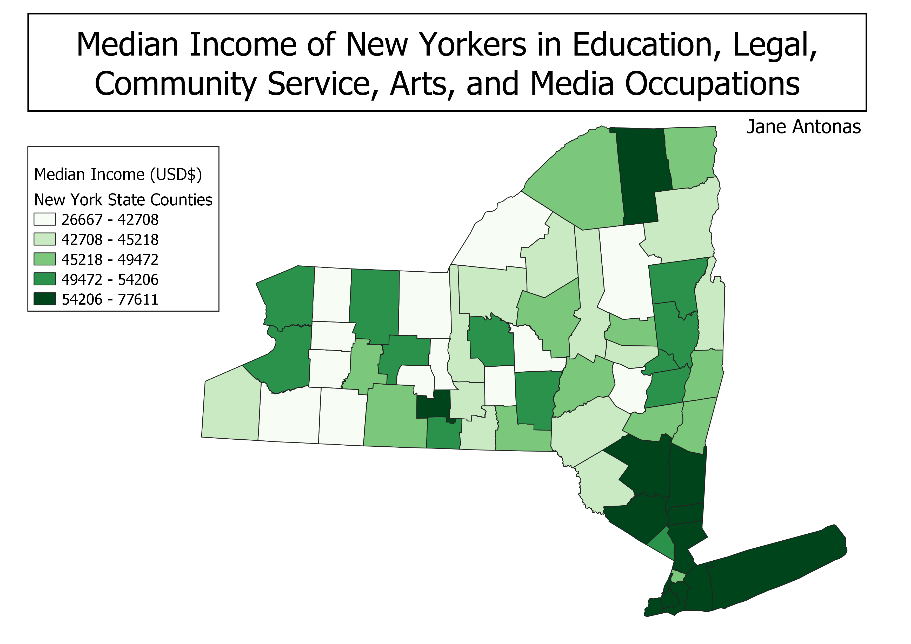

Homework 6: Census data choropleth
Jane Antonas
This map shows the median income reported for people employed in education, legal, community service, arts, and media occupations. It is interesting to see the relationship between rural or urban areas and median income for these occupations. Counties in and around the NYC area tend to have higher median incomes, but are also associated with higher living costs.

Data used for this project
CSV dataset
Link to shapefile